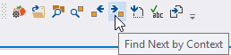
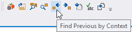

Find by Context
Find next and previous references by context to the symbol at the caret. Use buttons in the toolbar for Visual Assist, or assign shortcuts for more efficient access.


Use Find by Context in addition to, or in lieu of, automatic highlighting of all references to the symbol under the caret.
Learn more.